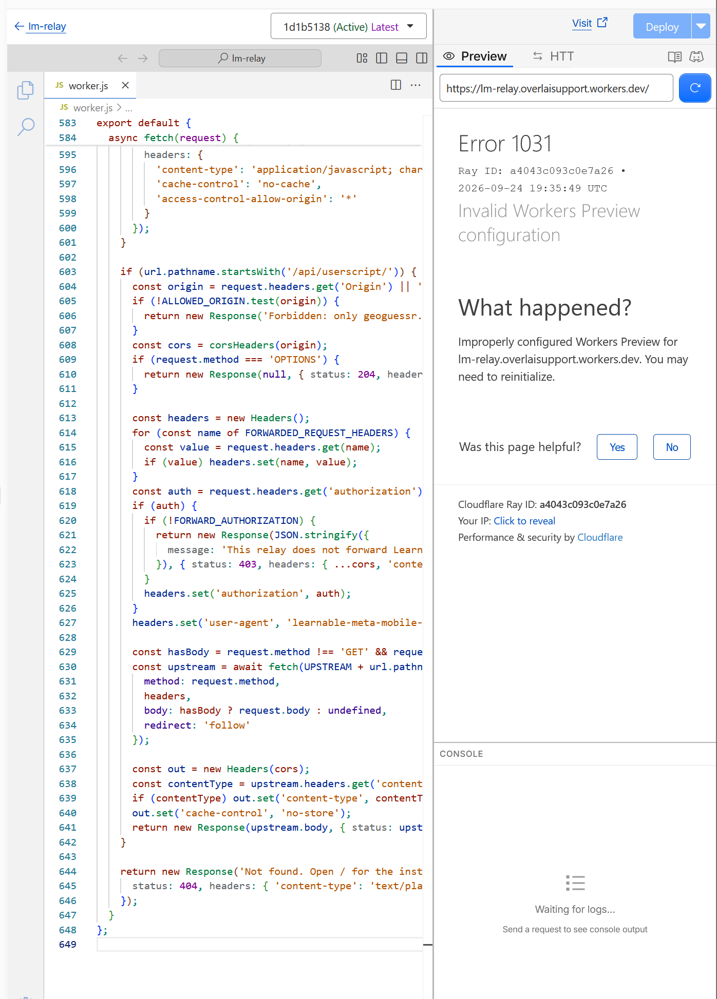

Host your own copy for tinkerers
Everything is open source on GitHub. The relay is a free Cloudflare Worker; this website is GitHub Pages. Both are free.
Fork the repository
Open the repository on GitHub and press Fork at the top right. You now have your own copy under your account.
Create the relay on Cloudflare
- Sign up at dash.cloudflare.com (no card needed). Skip any offer to add a website.
- Open Workers & Pages. The first time, pick a workers.dev subdomain; it becomes part of your address.
- Press Create, then Start with Hello World, name it
lm-relay, press Deploy. - Press Edit code. Select all in the editor and delete it. Open
worker.jsfrom your fork, copy all of it, paste it into the editor, and press Deploy. - Your relay address is
https://lm-relay.YOURNAME.workers.dev. Opening it plus/lm-mobile.jsshould show code.

Point the site and the relay at each other
In your fork, edit docs/config.js: set relay to your relay address and repo to your fork's address. Then edit SITE_URL near the top of worker.js (and of worker.template.js if you rebuild) to https://YOURNAME.github.io/learnable-meta-mobile/, and paste the updated worker.js into Cloudflare again.
Turn on GitHub Pages
In your fork: Settings, then Pages. Under Build and deployment choose Deploy from a branch, branch main, folder /docs, Save. After a minute your guide is at https://YOURNAME.github.io/learnable-meta-mobile/.
Optional: let Cloudflare deploy from GitHub
In Cloudflare: Workers & Pages, Create, then Import a repository, and pick your fork. Cloudflare then redeploys the worker on every push, using the wrangler.jsonc file in the repository, so you never paste code again.
Safety notes
- The relay only answers pages on geoguessr.com and stores nothing.
- It refuses to forward personal Learnable Meta tokens (
FORWARD_AUTHORIZATIONis false), so it is safe to share with other players. Only the map-creator upload feature needs a token; set the flag to true only on a relay that is yours alone. - Cloudflare's free plan allows 100,000 requests a day, far more than a group of players uses.
- The loader always downloads the current official script from
userscript.learnablemeta.com, unmodified.
Video walkthrough of creating and deploying a Worker: Cloudflare Workers Tutorial - Intro and Deployment.